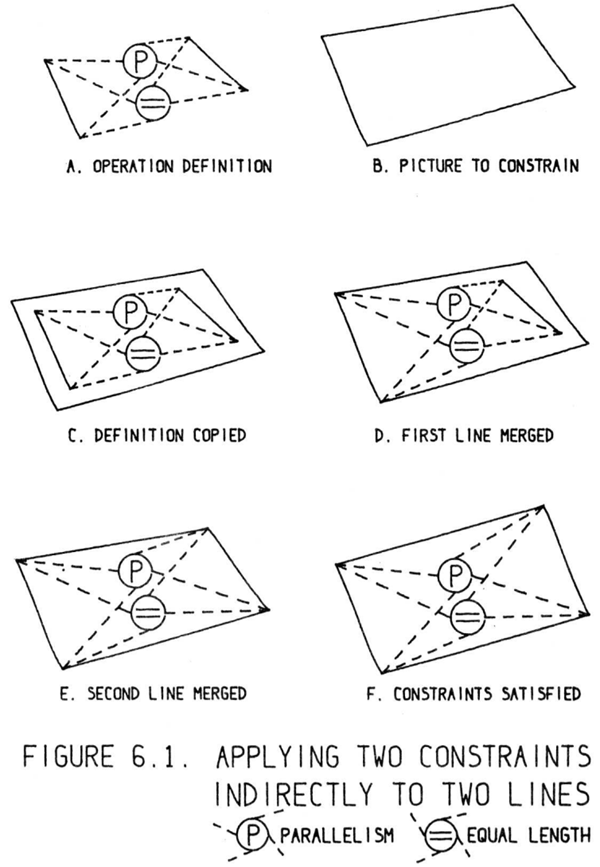

In the process of making the Sketchpad system operate, a few very general
functions were developed which make no reference at all to the specific types
of entities on which they operate. These general functions give the Sketchpad
system the ability to operate on a wide range of problems. The motivation
for making the functions as general as possible came from the desire to get as
much result as possible from the programming effort involved. For example,
the general function for expanding instances makes it possible for Sketchpad
to handle any fixed geometry subpicture. The rewards that come from implementing general functions are so great that the author has become reluctant to
write any programs for specific jobs.
Sketchpadシステムを構築する過程で、処理対象となる図形要素の具体的な種類に一切依存しない、極めて汎用的な機能がいくつか開発されました。こうした汎用的な機能のおかげで、Sketchpadシステムは多岐にわたる問題を扱えるようになっています。機能を可能な限り汎用的なものにしようと考えた動機は、プログラミングに費やした労力から最大限の成果を引き出したいという思いにありました。例えば、「インスタンス」を展開するための汎用機能によって、Sketchpadはどのような固定的な形状を持つサブピクチャ（部分図形）であっても扱えるようになりました。汎用的な機能を実装することの利点はあまりにも大きいため、著者としては、特定の用途に限定されたプログラムを書くことには気が進まなくなってしまったほどです。
Each of the general functions implemented in the Sketchpad system abstracts, in some sense, some common property of pictures independent of the
specific subject matter of the pictures themselves. For example, the instance expansion program is a representation of the fact that pictures from many fields
contain subpictures with relatively fixed appearance. It is not claimed that
the general functions described in this chapter form a complete set, that is,
abstract all the common properties of pictures. There is a definite need for a
general purpose function for making topological changes to a drawing. Such
a general purpose system is necessary, for example, to put fillets and rounds
on corners, or to be able to define a vocabulary of dotted lines which could
be, “unreeled, ” as it were, to any desired length. Nevertheless, the power obtained from the small set of generalized functions in Sketchpad is one of the
most important results of the research.
Sketchpadシステムに実装された各汎用機能は、ある意味で、図形が描く具体的な対象物とは無関係な、図形に共通する何らかの性質を抽象化したものです。例えば、「インスタンス展開（instance expansion）」プログラムは、多くの分野の図形において、比較的固定された外観を持つ「サブピクチャ（部分図形）」が含まれているという事実を表現したものです。本章で述べた汎用機能が完全なセットを構成している、すなわち図形の共通する性質をすべて抽象化していると主張するわけではありません。図形に対して位相的な変更を加えるための汎用機能が、明確に必要とされています。そのような汎用的な仕組みは、例えば角にフィレット（丸め）を施したり、あるいは「繰り出す」ようにして任意の長さにできる点線のパターンを定義したりするために必要となります。それにもかかわらず、Sketchpadにおける少数の汎用機能から得られる能力は、この研究の最も重要な成果の一つと言えます。
In order of historical development, the recursive functions in use in the
Sketchpad system are:
歴史的発展の順序で見ると、Sketchpadシステムで使用されている再帰関数は以下の通りです。
A common method of keeping track of the recursion process is to use, a “push
down list,” a device much like a sinking table used in cafeterias to hold dishes
so that as a dish is removed the next is ready. Each of the entries of a push
down list references the next, so that if one is removed, the location of the next
will be available. A peculiarity of the Sketchpad system is that these push
down lists are formed directly in the data storage structure and not separately
by the program. This guarantees that if the data storage structure fits in memory, it may be fully recursed withoutrisk that the push down information overflow the space available for it. As far as possible, Sketchpad uses parts of the
data structure otherwise used for other purposes to perform the push down
function.
再帰処理の過程を追跡する一般的な方法として、「プッシュダウン・リスト」が用いられます。これは、カフェテリアで皿を積み重ねておく昇降式の台（皿が取り除かれると次の一枚がすぐに使えるようになる仕組み）によく似た装置です。プッシュダウン・リストの各要素は次の要素を参照しているため、ある要素が取り除かれた際、次の要素の場所を特定できるようになっています。Sketchpadシステムの大きな特徴は、これらのプッシュダウン・リストがプログラムによって別途作成されるのではなく、データ格納構造の中に直接形成される点にあります。これにより、データ格納構造がメモリに収まる限り、プッシュダウン用の情報が利用可能な領域からあふれる（オーバーフローする）というリスクなしに、完全な再帰処理を行うことが保証されます。Sketchpadは可能な限り、本来は別の用途に使われるデータ構造の一部を、このプッシュダウン機能の実行に利用しています。
Chapter III and Appendix C described the ring structure used for primary
picture storate in the Sketchpad system and showed the relationships between
various kinds of blocks. In this section as little referencek as possible will be
made to the exact nature of the blocks involved, because by avoiding reference
to specific structure the functions considered may be made applicable to any
specific structure. By way of example, however, some specific cases will be
mentioned; bear in mind that these are meant only to be illustrative.
第3章および付録Cでは、Sketchpadシステムにおいて図形データの一次的な格納に用いられるリング構造について述べ、各種ブロック間の関係を示しました。本節では、対象となるブロックの具体的な性質については可能な限り言及を避けます。特定の構造への言及を避けることで、ここで検討する機能を、あらゆる特定の構造に適用可能なものとすることができるからです。ただし、例としていくつかの具体的な事例を挙げることもあります。これらはあくまで例示を目的としたものであることにご留意ください。
Certain picture elements depend in a vital way for their existence, display, and
properties on other elements. For example, a line segment must reference two
end points between which it is drawn; a set of digits must reference a scalar
which indicates the value to be shown. In three dimensions it might be that a
surface is represented as connecting four lines which in turn depend on end
points. If a particular thing depends on something else there will be in the
dependent thing a reference by pointer to the thing depended upon. In the
ring structure used in Sketchpad, there will be a ring with a “hen” pair in the
thing depended on and at least one “chicken” pair in a dependent thing. For
example, a ring will connect a point with all lines which use it as an end point;
the chicken pairs of this ring, being in the blocks for the lines in question, point
to the point as an end point of the lines.
特定の図形要素は、その存在、表示、および特性において、他の要素に不可欠な形で依存しています。例えば、線分は、その両端となる2つの点を参照しなければなりませんし、数字の列は、表示すべき値を示すスカラーを参照しなければなりません。3次元空間においては、ある面が4本の線分を接続する形で表現されることがありますが、それらの線分自体もまた、端点に依存しています。ある要素が他の要素に依存している場合、その依存する側の要素には、依存先の要素を指し示すポインタによる参照が含まれることになります。Sketchpadで採用されているリング構造においては、依存先の要素に「親（hen）」のペアを持つリングが形成され、依存する側の要素には少なくとも1つの「子（chicken）」のペアが含まれることになります。例えば、ある点と、その点を端点として使用するすべての線分とを接続するリングが形成される場合、当該リングの「子」ペアは、それらの線分に対応するデータブロック内に配置され、その線分の端点として当該点を指し示します。
Since there may be any number of rings passing through a given block,
a particular block may depend on some other blocks and simultaneously be
depended on by others. Such a block contains both hens and chickens. In
particular, all blocks contain at least one chicken which indicates by a reference
to a generic block the type of thing represented. Some things are otherwise
totally depended upon, e.g. points, some things are totally dependent, e.g.
lines, and some both depend and are depended on, e.g. instances.
ある特定のブロックを通過するリングは無数に存在し得るため、そのブロックは他のブロックに依存することもあれば、同時に他のブロックから依存されることもあります。そのようなブロックは、「親（hen）」と「子（chicken）」の双方を含んでいます。特に、すべてのブロックは少なくとも1つの「子」を含んでおり、この「子」は汎用的なブロックへの参照を通じて、表現されているものの種類を示しています。完全に依存されるだけのもの（例：点）もあれば、完全に依存するだけのもの（例：線）、さらには依存しつつ依存されるもの（例：インスタンス）も存在します。
Consistency is of course maintained if a single thing upon which no other
thing depends is deleted. To accomplish this, all chicken pairs in its block
are removed from their corresponding rings. The registers which comprised a
deleted block are declared “free” by their addition to the FREES storage ring.
In the Sketchpad system, line segments are entirely dependent and may be
deleted without affecting anything else. However, deleting a line may leave
end points on the drawing with no lines attached to them. A special button is
provided for removing all such useless points from the drawing.
他の要素が一切依存していない単一の要素を削除する場合、当然ながら整合性は維持されます。これを実現するために、当該ブロック内のすべての「チキン・ペア（chicken pairs）」が、それらが属するリングから取り除かれます。削除されたブロックを構成していたレジスタは、FREESストレージ・リングに追加されることで「空き（free）」状態であると宣言されます。Sketchpadシステムにおいて、線分は完全に独立した要素であり、他の要素に影響を与えることなく削除することが可能です。ただし、線を削除すると、図面上にどの線とも接続されていない端点が残ってしまうことがあります。こうした不要な点を図面からすべて削除するための専用ボタンが用意されています。
If a thing upon which other things depend is deleted, the dependent things must
be deleted also. For example, if a point is to be deleted, all lines which terminate
on the point must also be deleted. Otherwise, where would these lines end?
Similarly, deletion of a variable requires deletion of all constraints on that variable; a constraint must have variables to act on. Three dimensional surfaces
might be made to depend on lines which depend on points; if so, deletion of
a point would require deletion of a line which would in turn require deletion
of a surface. In Sketchpad, deleting a scalar forces deletion of all digits displaying its value, which will force deletion of all constraints holding the digits
in position. Although the scalar-digits-constraint chain is the longest one in
Sketchpad, the programs could handle longer chains if they existed.
ある要素に他の要素が依存している場合、その要素を削除すれば、依存している要素も削除しなければなりません。例えば、ある点を削除する場合、その点を端点とするすべての線分も削除する必要があります。そうでなければ、それらの線分はどこで終わることになるのでしょうか。同様に、ある変数を削除するには、その変数に関するすべての拘束（制約）も削除する必要があります。拘束というものは、作用を及ぼすべき変数を必要とするからです。3次元曲面が、点に依存する線分に依存するように構成される場合もあります。その場合、点を削除すると線分を削除する必要が生じ、ひいては曲面も削除する必要が生じることになります。Sketchpadにおいてスカラー値を削除すると、その値を表示しているすべての数字が強制的に削除され、さらにそれらの数字の位置を保持しているすべての拘束も強制的に削除されることになります。「スカラー値・数字・拘束」という連鎖はSketchpad内で最も長いものですが、もしそれより長い連鎖が存在したとしても、プログラムはそれらを処理することが可能です。
The recursiveness of deletion brings with it the difficulty that one deletion
may cause any number of deletions. It may therefore be difficult to follow
the ring structure during deletions. For example, suppose that everything in a
particular picture is to be deleted, a facility which is provided. The program
applies the delete routine tok the first thing in the picture, say a point, and then to the next thing in the picture, say a line which terminated on the point. The
normal macro mentioned in Chapter III for applying functions to all the members of a ring, LGORR, cannot be used, for at the time the next ring member
is to be located, both it and the current ring member may be so much meaningless free storage. To delete everything in a picture, Sketchpad again and
again deletes the first thing in the picture, thus chewing away until the picture
is gone.
削除処理が再帰的であることには、一つの削除が連鎖的に多数の削除を引き起こしかねないという難しさがあります。そのため、削除の過程でリング構造をたどることが困難になる場合があります。例えば、ある図（ピクチャー）内のすべての要素を削除する場合を考えてみましょう（Sketchpadにはそのような機能が備わっています）。プログラムはまず図内の最初の要素（例えば「点」）に対して削除ルーチンを適用し、続いて次の要素（例えばその点に端点を持つ「線分」）に対して適用を行います。ここで、リングの全要素に関数を適用するために第3章で紹介した通常のマクロ「LGORR」は使用できません。なぜなら、次のリング要素を特定しようとする時点では、その要素も現在の要素も、すでに意味をなさない「空き記憶領域（フリーストレージ）」と化している可能性があるからです。そこでSketchpadは、図内のすべての要素を削除するために、図内の最初の要素を繰り返し削除するという手法をとります。こうして、図全体が消滅するまで、次々と要素を削り取っていくのです。
The push down list for recursive deletion is formed with the pair of registers which normally indicates what type of thing a block represents. As soon
as it is found that a block must be deleted, it is declared “dead” by placing its
TYPE pair in a generic ring called DEADS. The first dead thing is then examined to see if it forces other things to be declared dead, which is done until no
more dead things are generated by the first dead thing. The first dead thing
is then declared “free” and the new first dead thing is examined in exactly the
same way until no more dead things exist. The DEADS ring, through registers
which normally indicate type, serves as the push down list.
再帰的削除のためのプッシュダウン・リストは、通常はブロックが表す要素の型を示す一対のレジスタを用いて構成されます。あるブロックを削除すべきだと判明すると、そのブロックの「型（TYPE）」を示すレジスタ対を「DEADS」と呼ばれる汎用リング構造に組み込むことで、そのブロックは「デッド（dead：削除対象）」であると宣言されます。続いて、最初にデッドとされた要素が他の要素をデッドにする要因となるかどうかが検査されます。このプロセスは、その要素に起因して新たなデッド要素が生成されなくなるまで繰り返されます。その後、最初の要素は「フリー（free：空き領域）」であると宣言され、新たなデッド要素がなくなるまで、次のデッド要素に対しても全く同様の検査が行われます。このように、通常は型を示すレジスタを利用したDEADSリングが、プッシュダウン・リストとしての役割を果たすのです。
The single most powerful tool for constructing drawings, when combined with
the definition copying function described in Chapter VII, is the ability to merge
picture parts recursively. The recursive merge function makes it possible to
make statements such as “this thing is to be related to that thing in such and
such a way.” The relationship may be treated as applying to things which it
relates only indirectly. For example we shall soon see how one line may be
made parallel to another even though the parallelism constraint applies only
to the locationsk of their end points. Similarly, a set of digits can be forced
to display the length of a line, even though the constraint involved refers to
the end points of the line and the value of the digits rather than to the line or
the digits themselves. The recursive merge function makes it meaningful to
combine anything with anything else of the same type regardless of whether
the things are dependent on other things or depended on by others.
図形を構築する上で最も強力なツールは、第7章で述べた定義のコピー機能と組み合わせた場合、図形要素を再帰的にマージ（統合）する機能です。この再帰的マージ機能により、「ある要素を別の要素と、このような関係で結びつける」といった指定が可能になります。ここで設定された関係は、直接結びつけられていない要素に対しても適用される場合があります。例えば、平行であるという制約が実際には線分そのものではなくその端点の位置に適用される場合であっても、ある線分を別の線分と平行に設定できることは、後ほど見ていく通りです。同様に、数値の表示（数字の列）をある線分の長さに対応させることも可能です。この場合、制約が参照しているのは線分や数字そのものではなく、線分の端点と数字の値なのですが、それでもそのような設定が行えるのです。再帰的マージ機能のおかげで、ある要素が他の要素に依存しているか、あるいは他の要素から依存されているかに関わらず、同種の要素同士であればどのようなものでも互いに組み合わせることが有意義なものとなります。
If two things of the same type which are independent are merged, a single thing
of that type results, and all things which depended on either of the merged things
depend on the result∗
of the merger. For example, if two points are merged, all
lines which previously terminated on either point now terminate on the single
resulting point. In Sketchpad, if a thing is being moved with the light pen
and the termination flick of the pen is given while aiming at another thing
of the same type, the two things will merge. Thus, if one moves a point to
another point and terminates, the points will merge, connecting all lines which
formerly terminated on either. This makes it possible to draw closed polygons.
同種の独立した2つの要素を統合すると、その種類の要素が1つになり、統合されたいずれかの要素に依存していたすべての要素は、統合によって生じたその要素に依存するようになります。例えば、2つの点を統合する場合、それまでいずれかの点で終わっていたすべての線分は、統合後の単一の点で終わるようになります。Sketchpadにおいて、ライトペンで要素を移動させている際、同種の別の要素を狙って操作を終了（フリック）させると、その2つの要素は統合されます。したがって、ある点を別の点まで移動させて操作を終了すれば、それらの点は統合され、以前はいずれかの点で終わっていたすべての線分が接続されることになります。これにより、閉じた多角形を描くことが可能になります。
If two things of the same type which do depend on other things are merged one
will be forced to merge with the things depended on by the other. The result∗
of merging two dependent things depends respectively on the results∗
of the mergers it forces.
For example, if two lines are merged, the resultant line must refer to only two
end points, the results of merging the pairs of end points of thek original lines.
All lines which terminated on any of the four original end points now terminate on the appropriate one of the remaining pair. More important and useful,
all constraints which applied to any of the four original end points now apply to the appropriate one of the remaining pair. This makes it possible to
speak of line segments as being parallel even though (because line segments
contain no numerical information to be constrained) the parallelism constraint
must apply to their end points and not to the line segments themselves. If we
wish to make two lines both parallel and equal in length, the steps outlined
in Figure 6.1 make it possible. More obscure relationships between dependent
things may as easily be defined and applied. For example, constraint complexes can be defined to make line segments be collinear, to make a line be
tangent to a circle, or to make the values represented by two sets of digits be
equal.
他の要素に依存する同種の2つの要素を統合する場合、一方の要素は、もう一方の要素が依存している対象とも統合されることになります。これら依存関係にある2つの要素を統合した結果は、その統合に伴って強制される各統合の結果に依存します。
例えば、2本の線分を統合する場合、その結果として生じる線分は、元の2本の線分が持つ端点のペアをそれぞれ統合して得られる2つの端点のみを参照することになります。元の4つの端点のいずれかで終わっていたすべての線分は、統合後に残ったペアのうち適切な端点で終わるようになります。さらに重要かつ有用な点として、元の4つの端点のいずれかに適用されていたすべての拘束条件が、統合後に残ったペアのうち適切な端点に適用されるようになります。これにより、線分同士が平行であると表現することが可能になります（線分自体には拘束すべき数値情報が含まれていないため、平行性の拘束条件は線分そのものではなく、その端点に適用される必要があるにもかかわらず、です）。2本の線分を平行かつ等長にしたい場合、図6.1に示す手順によってそれを実現できます。依存関係にある要素間の、より複雑な関係についても、同様に容易に定義し適用することができます。例えば、線分を同一直線上に配置する、線を円に接するようにする、あるいは2組の数字で表される値を等しくするといった拘束条件の複合体を定義することが可能です。

The most powerful tool provided in the Sketchpad system for creating large
complex drawings quickly and easily is the instance. Instances are recursively
expanded so that instances may contain other instances to give an exponential
growth of picture produced with respect to effort expended. Instances may
have attachment points and therefore may connect points topologically much
as line segments do. For example, an instance of a resistor may connect two
points both electrically and geometrically on the drawing. An instance also
has the properties of a four component variable: numbers are stored in each
instance block to indicate where, how big, and in what rotation that instance
is to appear on the picture. It took some time to reconcile the topological properties of instances with their properties as variables.
Sketchpadシステムにおいて、大規模かつ複雑な図面を迅速かつ容易に作成するために用意された最も強力なツールは「インスタンス」です。インスタンスは再帰的に展開可能であり、インスタンスの中に別のインスタンスを含めることができるため、投入した労力に対して指数関数的な規模の図形を生成できます。インスタンスは接続点を持つことができ、線分と同様に、トポロジカル（位相的）な観点から点を接続することが可能です。例えば、抵抗器のインスタンスであれば、図面上の2つの点を電気的かつ幾何学的に接続することができます。また、インスタンスは4つの要素からなる変数としての性質も備えています。つまり、各インスタンスのデータブロックには、そのインスタンスを図面上のどこに、どの程度の大きさで、どのような回転角で配置するかを示す数値が格納されているのです。インスタンスが持つトポロジカルな性質と、変数としての性質とを整合させるには、かなりの時間を要しました。
The block of registers which represents an instance is remarkably small
considering that it may generate a display of any complexity. For the purposes of display, the instance block makes reference to a picture by means of
its chicken in a ring which ties a picture to all its instances. The instance will
appear on the display as a figure geometrically similar to the picture of which
it is an instance but at a location, size, and rotation indicated by the four numbers which constitute the “value” of the instance. An important omission as
this is written is the ability to make mirror images. Right and left handed
figures must now be treated separately, whereas the instance should indicate
whether a right or left handed version of the master is to be shown.
インスタンスを表すレジスタ・ブロックは、それがいかに複雑な表示をも生成し得るかを考えると、驚くほど小規模なものです。表示を行う際、このインスタンス・ブロックは、図形（ピクチャー）とそのすべてのインスタンスとを関連付ける「リング構造（chicken in a ring）」を介して、当該図形を参照します。そのインスタンスは、元となる図形と幾何学的に相似な形状として表示されますが、その位置、サイズ、回転角は、インスタンスの「値」を構成する4つの数値によって指定されます。現時点での重要な欠落事項として、鏡像（反転図形）を作成する機能がないことが挙げられます。現状では、右回り（右手系）の図形と左回り（左手系）の図形を別々に扱う必要がありますが、本来であれば、インスタンスにおいて、マスター図形の右回り版と左回り版のどちらを表示するかを指定できるようにすべきです。
The four numbers which specify the size, rotation, and location of the instance
are considered numerically as a four dimensional vector. In certain computations, the value of a variable is changed “as little as possible” if there is no
need to change it further. The distance measured in the case of instances is the
square root of the sum of the squares of the four components. For this reason,
and for simplicity in the use of the fixed point arithmetic of the TX-2, it is important that the four numbers used to represent the vector be of about the same
order of magnitude. The particular numbers chosen are the coordinates of the
center of the instance and the actual size of the instance as it appears on the
drawing times the sine and cosine of the rotation angle involved. In a typical
drawing these four numbers have reasonably similar ranges of variation.
インスタンスのサイズ、回転、および位置を規定する4つの数値は、数値的には4次元ベクトルとして扱われます。特定の計算においては、変数の値をそれ以上変更する必要がない場合、その変更は「可能な限り」最小限に抑えられます。インスタンスに関して測定される距離は、これら4つの成分の二乗和の平方根となります。こうした理由から、またTX-2の固定小数点演算を簡便に利用するためにも、ベクトルを表現する4つの数値の大きさが概ね同程度であることが重要です。具体的に採用される数値は、インスタンスの中心座標と、図面上でのインスタンスの実際のサイズに回転角の正弦（サイン）および余弦（コサイン）をそれぞれ乗じた値です。一般的な図面では、これら4つの数値がとり得る値の範囲は、互いにそれほど大きくは違わないものとなります。
In our early work we attempted to use the position and the sine and cosine of the rotation angle times the reduction in size from the master picture in
order to avoid the normalization of master picture size implicit in the above
paragraph. This not only prevented having instances larger than their masters
because of the fixed point arithmetic, but also made distance in the four dimensional space meaningless. No attempt was ever made to use the size and
rotation numbers independently.
初期の研究において、我々は、前述の段落で暗黙のうちに前提とされていた「マスター画像のサイズ正規化」を回避しようと試みました。その際、位置情報に加え、回転角の正弦・余弦にマスター画像からの縮小率を乗じた値を用いる手法をとりました。しかし、この方法では、固定小数点演算に起因してインスタンスがマスター画像よりも大きくなってしまう事態を防げたものの、4次元空間における距離という概念が無意味なものとなってしまいました。サイズと回転角の値を独立して用いるという試みは、一度も行われませんでした。
The transformations of coordinates represented by the above paragraphs
上記の各段落で示された座標変換
\[
\begin{align}
\text{poor}\quad &
\begin{bmatrix}
x_d \\
y_d
\end{bmatrix}
=\begin{bmatrix}
i_1 & i_2 \\
-i_2 & i_1
\end{bmatrix}
\begin{bmatrix}
x_m \\
y_m
\end{bmatrix}
+
\begin{bmatrix}
i_3 \\
i_4
\end{bmatrix} \tag{6-1} \\
\\
\text{Better} \quad &
\begin{bmatrix}
x_d \\
y_d
\end{bmatrix}
=
\begin{bmatrix}
i_1 & i_2 \\
-i_2 & i_1
\end{bmatrix}
\begin{bmatrix}
x_m/s_m \\
y_m/s_m
\end{bmatrix}
+
\begin{bmatrix}
i_3 \\
i_4
\end{bmatrix} \tag{6-2}
\end{align}
\]
where:
ここで
\(x_d, y_d\) = Display location in page coordinates.
\(x_d, y_d\) = ページ座標系における表示位置。
\(x_m, y_m\) = Master location in page coordinates.
\(x_m, y_m\) = ページ座標系におけるマスターの位置。
\(s_m\) = Size of master picture in page coordinates.
\(s_m\) = ページ座標系におけるマスター画像のサイズ。
\(i_1...i_4\) = 4 vector in instance, \(−1 \lt i_i \lt +1\).
\(i_1...i_4\) = インスタンス内の4次元ベクトル、\(−1 \lt i_i \lt +1\)。
In displaying an instance of a picture, reference must be made to the picture
itself to find out what picture parts are to be shown. The picture referred to
may contain instances, however, requiring further reference, and so on until a
picture is found which contains no instances. A recursive program performs
this function. At each stage in the recursion, any picture parts displayed must
be relocated so that they will appear at the correct position, size and rotation
on the display. Thus, at each stage of the recursion, some transformation of the
form of Equation (6-2) is applied to all picture parts before displaying them. If
an instance is encountered, the transformation represented by its value must
be adjoined to the existing transformation for display of parts within it. When
the expansion of an instance within an instance is finished, the transformation
must be restored for continuation at the higher level.
ある「ピクチャ」のインスタンスを表示する際には、どのピクチャ要素を表示すべきかを知るために、そのピクチャ自体を参照する必要があります。しかし、参照先のピクチャには、さらに別の参照を必要とするインスタンスが含まれている場合があり、インスタンスを含まないピクチャに行き着くまで、この参照の連鎖が続きます。この処理は再帰的なプログラムによって実行されます。再帰の各段階において、表示されるピクチャ要素は、ディスプレイ上で正しい位置、サイズ、回転角で表示されるように配置し直す必要があります。したがって、再帰の各段階では、ピクチャ要素を表示する前に、それらに対して式(6-2)の形式を持つ変換が適用されます。インスタンスに遭遇した場合は、そのインスタンスが持つ値によって表される変換を、その内部にある要素を表示するための既存の変換に合成（追加）しなければなりません。インスタンス内のインスタンスの展開が完了した際には、より上位のレベルでの処理を継続するために、変換の状態を元に戻す必要があります。
To avoid the difficulties of taking an inverse transformation, the old transformation is saved in registers provided for that purpose in the picture block
of the picture being expanded. Thus, the current transformation is stored in
program registers and is being used, whereas the previous transformation is
saved in the picture block currently being expanded. The push down list is
provided also by indicating in the picture block being expanded the particular
instance thereof which is responsible for this expansion of the picture. The first
picture to be displayed starts with no transformation at all. Thus, if it contains
itself as an instance, one recursion is possible, saving the old transformation in
the picture block and saving the address of the instance responsible for the expansion in the picture block as well. Subsequent recursions will be prevented,
however, because no instance is expandedk if the picture of which it is an instance already belongs on the push down list. It would be possible to expand
such circular instances further by providing some suitable termination condition such as reaching a level too small to show on the display. However, since
the instances might get larger rather than smaller, termination conditions are
far from simple.
逆変換を行う際の困難を避けるため、展開中の図形（ピクチャ）の図形ブロック内に設けられた専用のレジスタに、以前の変換情報が保存されます。つまり、現在の変換情報はプログラム用レジスタに格納されて使用される一方、以前の変換情報は展開中の図形ブロックに保存されるという仕組みです。また、プッシュダウンリストの機能は、図形の展開を担っている特定のインスタンスを、展開中の図形ブロック内で指定することによっても実現されています。最初に表示される図形は、いかなる変換も適用されていない状態で開始されます。したがって、その図形が自身のインスタンスを内部に含んでいる場合、1段階の再帰が可能となります。この際、以前の変換情報と、展開を担ったインスタンスのアドレスの両方が図形ブロックに保存されます。しかし、それ以降の再帰は行われません。なぜなら、あるインスタンスの元となる図形がすでにプッシュダウンリストに含まれている場合、そのインスタンスは展開されないからです。もちろん、表示上識別できないほど微小なレベルに達するといった適切な終了条件を設ければ、そのような循環的なインスタンスをさらに展開することも可能です。しかし、インスタンスが縮小するのではなく拡大していく場合もあり得るため、終了条件の設定は決して単純なものではありません。
Many symbols used must be integrated into the rest of the drawing by attaching lines to the symbols at appropriate points, or by attaching the symbols
directly to each other as if by zero length lines. For example, circuit symbols must be wired up, geometric patterns made by fitting shapes together, or
mechanisms composed of links tied together appropriately. An instance may
have any number of tie points, and conversely, a point may serve as tie for any
number of instances.
使用される多くのシンボルは、適切な位置で線によって接続するか、あるいは長さゼロの線で結ぶかのようにシンボル同士を直接接続することで、図面の他の部分と統合する必要があります。例えば、回路シンボルであれば配線を行い、幾何学模様であれば形状を組み合わせて構成し、機構であればリンクを適切に連結して組み立てるといった具合です。一つのインスタンスは任意の数の接続点を持つことができ、逆に、一つの点が任意の数のインスタンスの接続点として機能することもあり得ます。
An “instance-point” constraint block is used to relate an instance to each
of its tie points. An instance-point constraint is satisfied only when the point
bears the same relationship to the instance that a point in the master picture
for that instance bears to the master picture coordinate system. Instance-point
constraints are treated as a special case when an instance is moved so that
tie points always move with their instance, and lines terminating on the tie
points move as well. Each instance-point constraint makes reference to both
the instance and its tie points by means of chickens.
「インスタンス・ポイント」制約ブロックは、インスタンスをその各タイ・ポイント（結合点）と関連付けるために使用されます。インスタンス・ポイント制約が満たされるのは、そのポイントがインスタンスに対して持つ関係が、当該インスタンスのマスター・ピクチャ内のポイントがマスター・ピクチャの座標系に対して持つ関係と同一である場合のみです。インスタンス・ポイント制約は、インスタンスが移動する際の特別なケースとして扱われ、タイ・ポイントは常にインスタンスと共に移動し、それらのタイ・ポイントに接続されている線分も同様に移動します。各インスタンス・ポイント制約は、「チキン（chickens）」を用いて、インスタンスとそのタイ・ポイントの双方を参照します。
To use a point as an attacher of an instance, the point must be designated
as an attacher in the master drawing of the instance. For example, when one
first draws a resistor, the ends of the resistor mustk be designated as attachers if
wiring is to be attached. When an instance is created by pressing the “instance”
button, toggle switches tell what picture the instance is to refer to. Along with
the instance element are created a point and an instance-point constraint for
each attacher. These points are bonifide points in the object picture but are not
automatically attachers of the object picture. If they are to be used as attachers
when the object picture is instanced, they must be designated anew. Thus of
the three attachers of a transistor it is possible to select one or two to be the
attachers of a flip-flop.
ある点をインスタンスの接続点（アタッチャー）として利用するには、そのインスタンスのマスター図面において、当該点を接続点として指定しておく必要があります。例えば、抵抗器を最初に描画する際、配線を接続するつもりであれば、その抵抗器の両端を接続点として指定しなければなりません。「インスタンス」ボタンを押してインスタンスを作成する際には、トグルスイッチによって、そのインスタンスがどの図面を参照するかが指定されます。インスタンス要素の作成に伴い、各接続点に対応する「点」と「インスタンス点拘束」も生成されます。これらは参照先の図面（オブジェクト図面）上では正真正銘の「点」ですが、自動的にその図面の接続点となるわけではありません。オブジェクト図面がインスタンス化された際に接続点として利用するには、改めて接続点として指定する必要があります。したがって、例えばトランジスタが3つの接続点を持っている場合、そのうちの1つまたは2つだけを選んで、フリップフロップの接続点とすることも可能です。
The entire internal structure of the instance is suppressed as far as the light
pen is concerned except for the attachers. Thus even on a dense circuit drawing it is possible to connect elements with ease because at the highest level of
instance only the designated attachers will hold the attention of the light pen
program. Usually there are only a few attachers for each block no matter how
complicated internally, and so it is generally obvious which one to use.
ライトペンの観点からは、アタッチャー（接続点）を除き、インスタンスの内部構造はすべて隠蔽されます。そのため、たとえ回路図が複雑で要素が密集していても、容易に要素間を接続することが可能です。なぜなら、インスタンスの最上位レベルにおいては、指定されたアタッチャーだけがライトペン・プログラムの認識対象となるからです。通常、ブロックの内部構造がいかに複雑であってもアタッチャーの数はごくわずかであるため、どのアタッチャーを使用すべきかは一目瞭然です。
At first only variables could be moved. Moving a variable means to change
somehow the numbers stored as the components of the variable, usually to
make the display for the variable follow light pen motions. A moving point,
for example, will be firmly attached to the pseudo pen position, while a moving piece of text faithfully follows light pen displacements so that the part of
the text which was under the pen when the “move” button was pressed remains under the pen. For variables with more than two components, moving
is partly controlled by the pen and partly by knobs. For example, the moving text can be made larger ork rotated by two of the knobs.
当初は、変数のみを移動させることができました。「変数を移動させる」とは、その変数の構成要素として格納されている数値を何らかの形で変更することを意味し、通常はライトペンの動きに合わせて変数の表示を追従させるために行われます。例えば、移動する点は擬似的なペン位置にしっかりと固定されますが、移動するテキストはライトペンの変位に忠実に追従するため、「移動」ボタンが押された際にペンの下にあったテキスト部分が、そのままペンの下に留まるようになっています。2つ以上の構成要素を持つ変数の場合、その移動はペンとノブによって部分的に制御されます。例えば、移動中のテキストを2つのノブを使って拡大したり回転させたりすることが可能です。
The advent of the recursive merging and the definition copying functions
made it clear that one should be able to move anything regardless of whether
or not it is variable. To move a non-variable, a recursive process is used to find
whatever variables may be basic to the thing being moved. For example, if a
line is to be moved, the end points on which it depends must be moved. All
objects which are being moved are put in a ring whose hen is in the MOVINGS
generic block. The object actually attached to the light pen is first in the ring.
Upon termination only this first object in the MOVINGS ring may be merged
with other objects.
再帰的マージ機能と定義コピー機能の登場により、変数の有無にかかわらず、あらゆるものを移動可能にすべきであることが明確になりました。変数ではないものを移動させる際には、再帰的な処理を用いて、その移動対象の構成要素となっている変数を特定します。例えば、ある線分を移動させる場合、その線分が依存している端点も移動させる必要があります。移動対象となるすべてのオブジェクトは、MOVINGSジェネリックブロック内に起点（head）を持つリング構造に格納されます。ライトペンに実際に捕捉されているオブジェクトが、このリングの先頭に配置されます。処理の終了時には、MOVINGSリングの先頭にあるこのオブジェクトのみが、他のオブジェクトとマージされることになります。
The numerical operation of moving is accomplished by the standard transformation procedure. The small transformation due to light pen position change
and knob rotation since the last program iteration is converted to the form of
Equation (6-2) and placed in the standard location. Each object in the MOVINGS ring is transformed by it. The generic block for each type of object, of
course, contains the subroutine to apply the transformation to such objects.
The generic block for lines, for example, indicates that no transformation need
be applied to the line because it contains no numerical values and will automatically be moved when its end points are moved.
移動という数値演算は、標準的な変換手順によって実行されます。前回のプログラム反復以降に生じたライトペンの位置変化やノブの回転に伴う微小な変換は、式(6-2)の形式に変換され、所定の場所に格納されます。MOVINGSリング内の各オブジェクトは、この変換を適用して処理されます。当然ながら、各オブジェクトタイプに対応する汎用ブロックには、そのオブジェクトに対して変換を適用するためのサブルーチンが含まれています。例えば、線（ライン）の汎用ブロックの場合、線には数値が含まれておらず、その端点が移動すれば線自体も自動的に移動するため、線に対して特別な変換を適用する必要はないと定義されています。
Moving objects must be invisible to the light pen. Since the light pen aims
at anything within its field of view, it would otherwise aim at a moving object and a jerky motion would result. Motion would only happen when the
pen’s field of view passed beyond the object being moved. Moreover, the display for moving objects must be recomputed regularly for the benefit of the
human user, but the unmoving background need not be recomputed. The
display spot coordinates for objects being recomputedk is placed last in the
display file, above (in higher numbered registers) the fixed background display so that it may be recomputed without disturbing the rest of the display
file. The light pen program rejects any spots seen by the pen which come from
these high display file locations. Needless to say, the entire display file must be
recomputed once to eliminate the former traces of the newly moving objects.
移動する物体は、ライトペンからは見えないようにする必要があります。ライトペンは視野内にあるあらゆるものを対象としてしまうため、もし移動する物体が見えてしまうと、ペンがその物体を捉えてしまい、動きがぎこちなくなってしまうからです。そうなると、ペンの視野がその移動物体を通り過ぎたときにしか動きが生じないことになります。さらに、移動する物体の表示はユーザーのために定期的に再計算する必要がありますが、静止している背景については再計算の必要がありません。再計算の対象となる物体の表示用座標データは、表示ファイル内の最後尾、つまり固定された背景の表示データよりも後（レジスタ番号の大きい位置）に配置されます。こうすることで、表示ファイルの他の部分に影響を与えることなく、それらの物体だけを再計算できるようになります。ライトペンを制御するプログラムは、表示ファイルのこうした後半部分に由来する表示点をペンが捉えた場合、それを無視するように動作します。言うまでもないことですが、新たに移動し始めた物体の以前の表示跡を消去するためには、表示ファイル全体を一度再計算する必要があります。